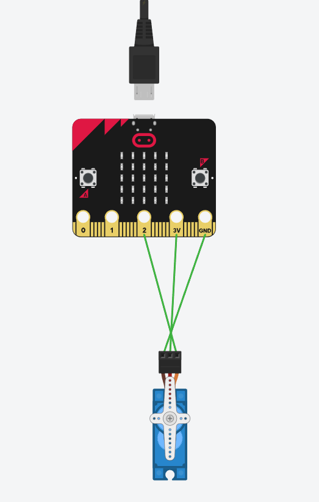

Automatic Blinds Opening System
Designed and Developed by Gary
Tired of adjusting your blinds every time the light changes? Introducing: My Automated Blinds System! This smart system uses a micro:bit and a servo motor to automatically open your blinds when the sun shines and close them when it gets dark. It ensures your home stays bright during the day and provides privacy at night—all without you lifting a finger. Say goodbye to manual adjustments and let the light do the work for you!
See it in action!
How it works:
The system I designed utilizes the micro:bit's light sensor to detect daylight or the presence of a strong light source.
- Daytime: The blinds open.
- Nighttime: The blinds close.
Tinkercad View
Who Can Use This?
This system is designed for everyone in the household. It's especially useful for those who want a hassle-free way to manage blinds, ensuring convenience by automatically opening them during the day and closing them at night.
Key Features
- Automatically opens the blinds when daylight or a strong light source is detected and closes them when it’s dark.
- Ideal for households seeking hands-free blind management with no manual adjustments required..
- Keeps your home naturally bright during the day and ensures privacy after dark.
360 View


Why Choose This System?
This automated blinds system offers effortless convenience by adjusting based on light levels, and enhancing comfort with natural light and privacy.